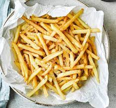

Fries Recipe

Description
Perfect French fries with our easy recipe you'll end up with lightly golden, crisp fries. They're great as a snack or side dish to a Friday night feast
Ingredients
- 1kg Maris Piper or King Edward potatoes
- vegetable oil, for deep frying
Steps
- Peel the potatoes and cut into 1cm-thick batons. Put into a bowl of cold water and leave to soak for at least 2 hrs to remove the starch from the potatoes – this will help them crisp while frying.
- Drain the potatoes well and pat dry with kitchen paper. Fill a deep pan no more than a third full with oil and heat to 140C, or until a cube of bread dropped in browns in 60 seconds. Fry the French fries in batches for 6 mins per batch until golden straw-coloured, cooked through and lightly crisp. Drain well on kitchen paper.
- Turn the heat up until the oil reaches 180C, or a cube of bread browns in 30 seconds. Fry the French fries again for 2-3 mins per batch until lightly golden and really crisp. Drain on kitchen paper and immediately season with sea salt.
Go back to main page